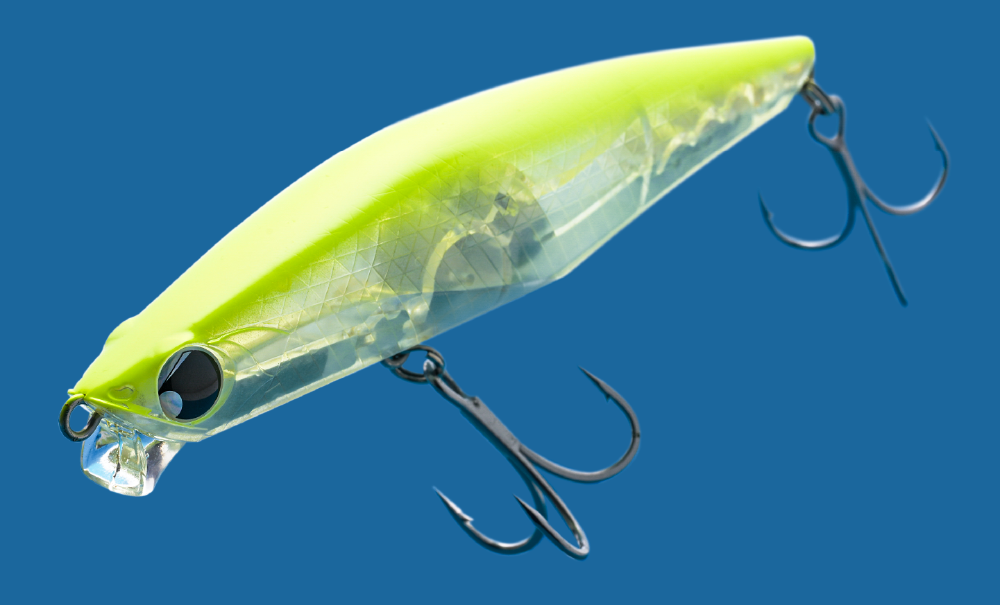

ワイゾン111S
（リップ付きシンキングペンシル）
ワイゾン111S ジェットブースト（WISON 111S JETBOOST）はSHIMANO（シマノ）エクスセンスシリーズのリップ付きシンキングペンシルです。
レンジキープ性能に長けた「ワイゾン」に追加された111mmの新サイズ。浮き過ぎず沈みすぎないシンクレートで中層をキープしながら、S字寄りのテールスライドで流れを躱して泳ぐ、秋の大型ベイトにマッチさせた1本です。
スペック
- メーカー
- シマノ（SHIMANO）
- タイプ
- シンキングペンシル（リップ付き）
- 全長
- 111mm
- 自重
- 40g
- フック
- #2×2
- 飛距離
- 70m
- 沈下速度
- 31cm/秒
- 流速スペック
- 66cm/秒〜
- ターゲット
- シーバス
- 価格
- 2,300円（税抜）
- 発売
- 2026年9月
▼今すぐチェック

ワイゾン111Sの特徴
大型ベイトのボリュームと、速い流れでも崩れない中層キープ力を両立した1本
-
横幅にも厚みを持たせたマッチザベイト仕様
単に全長を伸ばすだけでなく、ボディの横幅にもボリュームを持たせたシルエット。イナッコやサッパ、コノシロといった大型ベイトの存在感を再現しつつ、アクションはあくまでナチュラルでプレッシャーの高い状況でも口を使わせやすい。
-
ジェットブースト＋重心移動ウェイトのハイブリッド構造
腹面形状に沿った専用ウェイトのジェットブーストで低重心化し、さらに重心移動ウェイトを組み合わせたエクスセンス初のハイブリッド構造を採用。横幅のあるボディながら飛行姿勢が安定し、見た目からは想像できないキャストフィールを実現している。
-
S字寄りのテールスライドと水平シミーフォール
微ラウンドリップによるレンジキープ性能はそのままに、アクションはS字寄りのテールスライドに設計。速い流れでも水面を割って飛び出しにくく、ドリフトとの相性も良い。フォール中も水平姿勢で左右に揺れるシミーフォールでアピールを続ける。
ワイゾン111Sの使い方
基本はただ巻き。沈下速度31cm/秒のシンクレートを活かし、着水後にカウントを取って中層まで沈めてからリトリーブを始めるのが基本の組み立て。水平姿勢のまま一定レンジを引いてこられるので、反応のあったカウントを再現しやすい。
流れのある場所ではアップクロス〜ダウンクロスで投げ、ラインスラッグを回収する程度の速度で流れに乗せるドリフトも有効。ダウンクロスで強い流れを受けても浮き上がりにくいため、流芯の中層を通し続けられるのがこのルアーの強み。フォール中のシミーアクションにもバイトが出るので、テンションを抜きすぎないよう注意したい。
ワイゾン111Sの得意な状況
イナッコやサッパ、コノシロといった大型ベイトをシーバスが捕食している秋のシーズンが最大の出番。
河川の流芯や潮の効いた水道など、流速が速くて軽いシンペンでは浮き上がってしまう場面でも中層をキープできる。ベイトが大きく、なおかつ流れの中で食わせたい状況で選びたい1本です。
ワンポイント
流れが強いほどルアーは浮き上がりやすくなるため、レンジが上ずると感じたらリトリーブ速度を落とし、流れの力でアクションさせるイメージで引くと安定します。
逆に流れが緩い場所やベイトが小さい状況では、シリーズの77Sに持ち替えるのも有効です。
ワイゾンシリーズの使い分け
| モデル | 全長／自重 | 得意な場面 |
|---|---|---|
| 77S | 77mm／13g | 小型ベイト・緩流帯・大きめにテールを振るアクション |
| 111S | 111mm／40g | 大型ベイト・速い流れ・S字寄りのテールスライド（本記事のモデル） |
ワイゾンは77Sと111Sの2サイズ展開。77Sが小型ベイトや緩い流れを得意とするのに対し、111Sは77Sでは攻略しきれなかった大型ベイト・速い流れの状況を担う。ベイトサイズと流速で使い分けるのが基本だ。
オススメカラー
ワイゾン111Sは全9色展開。秋の大型ベイトパターンでオススメのカラーを厳選して紹介します。
イナッコパターンにマッチするナチュラル系。澄み潮やスレた状況の基準カラーに。
濁りやローライト時に存在感を出せる高アピールカラー。
シルエットをはっきり見せたいナイトゲームの定番色。
フラッシングで広範囲にアピールしたいデイゲームに。
画像出典:SHIMANO公式HP
ワイゾン111Sに似ているルアー
-

バンク120S ポップシークルー 詳細はこちら＞全長120mm・自重46gのリップ付きシンキングペンシル。重心移動による遠投性能と、ショートリップで悪条件でもレンジとアクションを保てる設計で、大型シーバスを狙う考え方がワイゾン111Sと重なる。
-
 ジグザグベイト120S
ポジドライブガレージ
詳細はこちら＞
ジグザグベイト120S
ポジドライブガレージ
詳細はこちら＞
全長120mm・自重43gの対ランカー型シンキングスイムベイト。大きくなってもナチュラルな泳ぎとドリフトへの対応力を備え、大きめのシルエットで流れの中のシーバスに口を使わせる狙いが共通する。